Hi Barbie
Filmes
Barbie em Quebra Nozes (2001)
 Clara é uma menina órfã que ganha de presente de Natal um boneco, o Quebra-Nozes. Enquanto Clara está dormindo, o boneco ganha vida e defende a menina dos soldados comandados pelo Rei dos Ratos. Quando ela acorda, percebe que foi encolhida através de um feitiço. Clara e o Quebra-Nozes iniciam uma jornada em busca de Fada Caramelo, a única que pode desfazer o feitiço.
Clara é uma menina órfã que ganha de presente de Natal um boneco, o Quebra-Nozes. Enquanto Clara está dormindo, o boneco ganha vida e defende a menina dos soldados comandados pelo Rei dos Ratos. Quando ela acorda, percebe que foi encolhida através de um feitiço. Clara e o Quebra-Nozes iniciam uma jornada em busca de Fada Caramelo, a única que pode desfazer o feitiço.
Barbie como Rapunzel (2002)
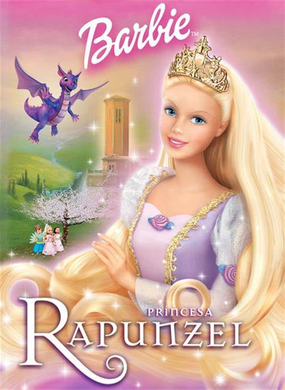 Rapunzel é obrigada por sua madrasta, a bruxa Gothell, a cuidar de todo o serviço de casa. Após descobrir uma escova de cabelo, com uma frase escrita por seus pais, a jovem resolve investigar o seu passado e acaba conhecendo o príncipe Steffan, por quem se apaixona. Gothell descobre tudo sobre os passeios de Rapunzel e resolve trancafiá-la em uma torre.
Barbie Lago dos Cisnes (2003)
 Depois de seguir um unicórnio até a Floresta Encantada, Odette, filha mais nova de um padeiro, é amaldiçoada por um perverso feiticeiro. Com a intenção de derrotar a Rainha das Fadas, o vilão transforma Odette em cisne e a obriga a salvar os habitantes do local.
Depois de seguir um unicórnio até a Floresta Encantada, Odette, filha mais nova de um padeiro, é amaldiçoada por um perverso feiticeiro. Com a intenção de derrotar a Rainha das Fadas, o vilão transforma Odette em cisne e a obriga a salvar os habitantes do local.
Barbie em A Princesa e a Plebeia (2004)
 Barbie vem à vida nesta moderna versão de um conto clássico sobre identidades trocadas e o poder da amizade. Baseado na historia de Mark Twain, Barbie em um surpreendente papel duplo como uma princesa e uma pobre garota da vila - duas garotas que possuem uma semelhança surpreendente! Os caminhos das garotas estão destinados a se cruzar quando a princesa Annelise é capturada e Érika, a garota da vila, tem que tentar salvá-la. Poderia Érika fingir ser a Princesa e enganar quem a capturou, o maldoso Preminger? E o belo Rei Dominick, que se apaixona por Érika, confundindo-a com Annelise? Nesta mágica performance musical, duas belas e corajosas garotas ousam seguir seus sonhos e descobrir que o destino está escrito em um lugar muito especial: seu coração!
Barbie vem à vida nesta moderna versão de um conto clássico sobre identidades trocadas e o poder da amizade. Baseado na historia de Mark Twain, Barbie em um surpreendente papel duplo como uma princesa e uma pobre garota da vila - duas garotas que possuem uma semelhança surpreendente! Os caminhos das garotas estão destinados a se cruzar quando a princesa Annelise é capturada e Érika, a garota da vila, tem que tentar salvá-la. Poderia Érika fingir ser a Princesa e enganar quem a capturou, o maldoso Preminger? E o belo Rei Dominick, que se apaixona por Érika, confundindo-a com Annelise? Nesta mágica performance musical, duas belas e corajosas garotas ousam seguir seus sonhos e descobrir que o destino está escrito em um lugar muito especial: seu coração!
Barbie Fairytopia (2005)
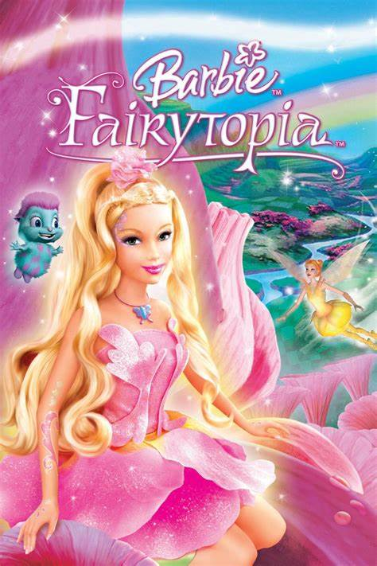 Em Fairytopia, vive Elina, uma fada das flores que sonha em ter asas. Quando sua casa de flor adoece e seus amigos não podem mais voar, Elina parte em uma jornada para encontar a Fada Guardiã, Azura, que talvez possa ajudá-la.
Barbie em Magia de Aladus (2005)
 A princesa Anikka foge das garras de um malvado feiticeiro, explora as maravilhas do Reino das Nuvens e se junta a um magnífico cavalo alado para derrotar o feiticeiro e quebrar o encanto que aprisiona sua família.
A princesa Anikka foge das garras de um malvado feiticeiro, explora as maravilhas do Reino das Nuvens e se junta a um magnífico cavalo alado para derrotar o feiticeiro e quebrar o encanto que aprisiona sua família.
O Diário da Barbie (2006)
 Barbie relata em seu diário o início do segundo ano do colegial e de uma nova fase cheia de expectativas. Ela se apaixona por Todd, craque do time de futebol, que a convidou para o baile. Mas o convite é desfeito quando Rachele, a ex-namorada e garota mais popular do colégio, reata o namoro com o atleta. Além disso, Rachele também fica com a vaga de apresentadora do jornal da escola. Mas desde que Barbie começa a usar a pulseira que vem com seu diário, sua sorte muda. Ela inscreve sua banda no festival do baile da escola e ainda conquistou um admirador secreto, será que é o Todd? O que acontecerá? Só lendo seu Querido Diário.
Barbie relata em seu diário o início do segundo ano do colegial e de uma nova fase cheia de expectativas. Ela se apaixona por Todd, craque do time de futebol, que a convidou para o baile. Mas o convite é desfeito quando Rachele, a ex-namorada e garota mais popular do colégio, reata o namoro com o atleta. Além disso, Rachele também fica com a vaga de apresentadora do jornal da escola. Mas desde que Barbie começa a usar a pulseira que vem com seu diário, sua sorte muda. Ela inscreve sua banda no festival do baile da escola e ainda conquistou um admirador secreto, será que é o Todd? O que acontecerá? Só lendo seu Querido Diário.
Barbie Fairytopia Mermaidia (2006)
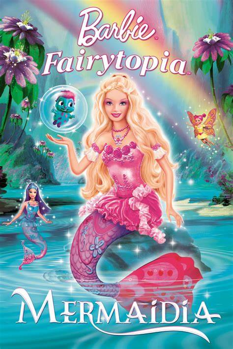 Depois e ganhar um par de asas como agradecimento por ter salvado o Reino das Fadas, Elina embarca em uma aventura debaixo d'água. Com ajuda da sereia Nori, a Fada do Campo precisa salvar o príncipe tritão Nalu, que foi sequestrado pela cruel Laverna.
Barbie As 12 Princesas Bailarinas (2006)
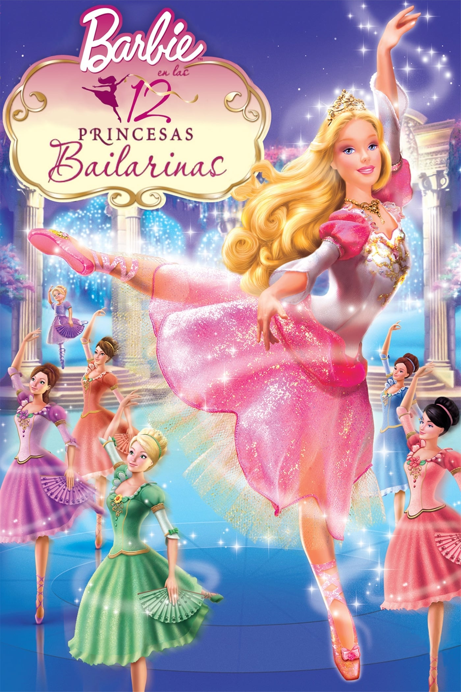 Quando a malvada tia Rowena se muda para o castelo, ela proíbe que as princesas dancem ou cantem para sempre, pois ela acredita que não é o tipo de comportamento adequado para uma princesa. As princesas descobrem um portal mágico que as leva para um lugar mais mágico ainda, para onde fogem. Mas quando Genevive fica sabendo que sua tia está tramando para governar o reino, ela precisa voltar para ajudar o seu pai, o rei!
Barbie Fairytopia A Magia do Arco Íris (2007)
 Elina viaja para a Escola de Fadas no Palácio de Crital. Lá, ela conhece outras aprendizes de fadas e aprende o ritual anual que cria o Primeiro Arco-Íris da primavera. No entanto, a terrível Laverna planeja punir Fairytopia com um rigoroso inverno de 10 anos.
Elina viaja para a Escola de Fadas no Palácio de Crital. Lá, ela conhece outras aprendizes de fadas e aprende o ritual anual que cria o Primeiro Arco-Íris da primavera. No entanto, a terrível Laverna planeja punir Fairytopia com um rigoroso inverno de 10 anos.
Barbie em a Princesa da Ilha (2007)
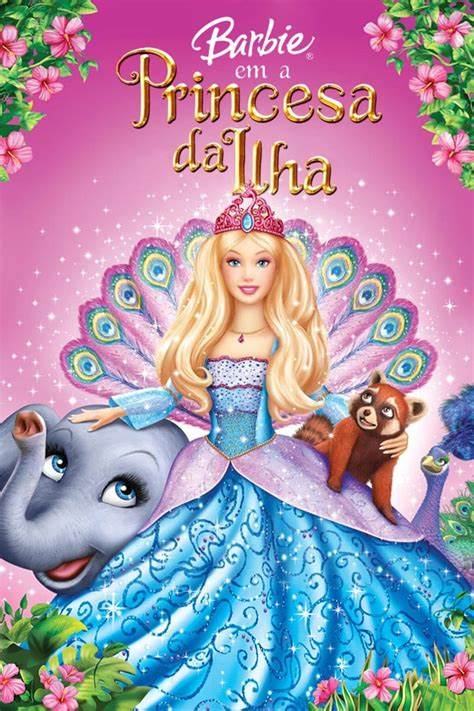 Naufragada quando criança, Rosella cresce na ilha sob o olhar atento de seus amáveis amigos animais. A chegada do príncipe Antonio leva Rosella e seus amigos peludos a explorar a civilização e, finalmente, salvar o reino, descobrindo uma trama secreta.
Barbie Butterfly A Nova Aventura Em Fairytopia (2008)
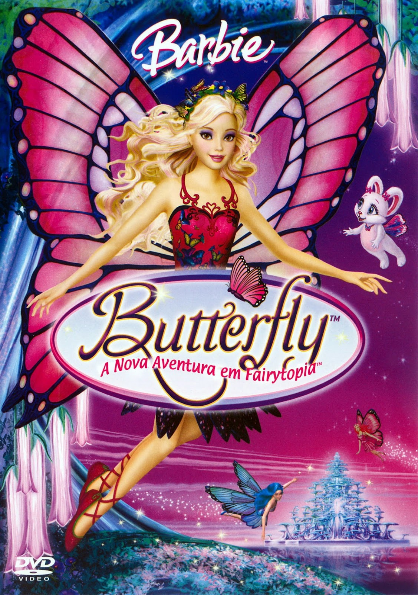 Butterfly é uma fada borboleta que vive no reino de Flutterfield. Com a ajuda do príncipe Carlos e das amigas Rayna e Rayla, Butterfly começa uma jornada em busca de um antídoto para salvar a Rainha Marabella, envenenada pela malvada Henna.
Barbie e o Castelo de Diamante (2008)
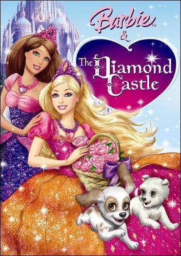 Para entender a importância da amizade, Barbie e sua melhor amiga, Teresa, decidem contar à jovem Stacie um conto de fadas musical de uma bela terra escondida, e duas garotas de bom coração que amam música: Alexa e Liana. Enquanto um espelho encantado abre caminho para uma nova e maravilhosa amizade, as duas companheiras embarcam em uma perigosa missão para o cintilante Castelo de Diamante, para frustrar os planos secretos da musa malévola, Lydia. O poder do amor e do companheirismo pode salvar o dia?
Barbie em A Canção de Natal (2008)
 Barbie brilha neste conto como Eden Starling, a glamourosa diva do Teatro Victorian de Londres. Com o seu gato arrogante, Chuzzlewit, Eden planeja, de maneira egoísta, fazer com que todos os artistas trabalhem na noite de Natal! Nem mesmo a sua figurinista Catherine, apenas uma jovem rapariga, consegue tirar a ideia da cabeça de Eden. Porém Eden é levada por 3 espíritos, nada convencionais, numa fantástica jornada que abrirá o seu coração ao espírito natalício numa temporada de alegria e amor.
Barbie brilha neste conto como Eden Starling, a glamourosa diva do Teatro Victorian de Londres. Com o seu gato arrogante, Chuzzlewit, Eden planeja, de maneira egoísta, fazer com que todos os artistas trabalhem na noite de Natal! Nem mesmo a sua figurinista Catherine, apenas uma jovem rapariga, consegue tirar a ideia da cabeça de Eden. Porém Eden é levada por 3 espíritos, nada convencionais, numa fantástica jornada que abrirá o seu coração ao espírito natalício numa temporada de alegria e amor.
Barbie em A Polegarzinha (2009)
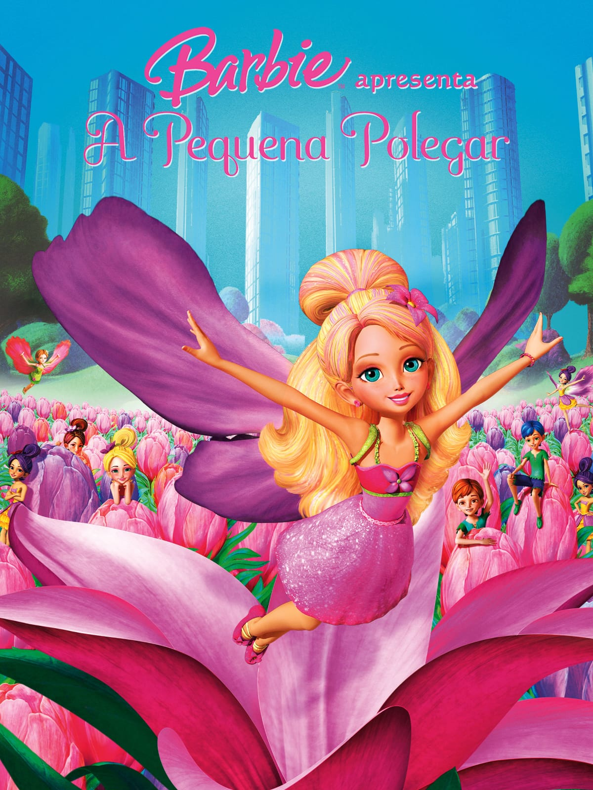 Conheçam uma pequena menina chamada Polegarzinha que vive em harmonia com a natureza no mundo mágico das Twillerbees escondido entre as flores silvestres. Por capricho de uma menina mimada chamada Makena, Polegarzinha e as suas duas amigas veem o seu canteiro de flores silvestres ser desenterrado e são transportadas para um apartamento exorbitante na cidade. Lá tomam conhecimento dos planos de construção que ameaçam destruir a terra das Twillerbees! Utilizando a magia da natureza, Polegarzinha parte para provar que até a mais pequena das pessoas pode fazer uma grande diferença.
Barbie e as Três Mosqueteiras (2009)
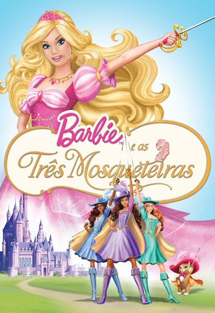 Em Barbie e As Três Mosqueteiras, a boneca mais famosa do mundo interpreta Corinne, uma jovem garota do campo que vai a Paris para realizar um sonho, o de se tornar uma mosqueteira. Lá, ela encontra três garotas que compartilham secretamente o mesmo desejo.
Barbie em Vida de Sereia (2010)
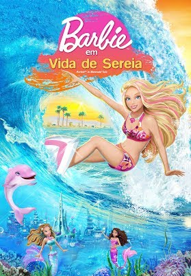 Merliah é uma surfista campeã de Malibu. Num momento, ela é uma adolescente normal e no outro descobre um segredo chocante de família: ela é uma sereia! Merliah e o seu amigo golfinho Zuma partem numa aventura submarina para salvar a sua mãe, a rainha de Oceana.
Barbie Moda e Magia (2010)
 Depois de descobrir três Flairies encantadores com poderes mágicos brilhantes, Barbie tem uma ideia brilhante para salvar o negócio. Ela até inspira Alice, uma estilista tímida, e juntas elas criam um desfile de moda deslumbrante. Barbie mostra que a mágica acontece quando você acredita em si mesmo.
Depois de descobrir três Flairies encantadores com poderes mágicos brilhantes, Barbie tem uma ideia brilhante para salvar o negócio. Ela até inspira Alice, uma estilista tímida, e juntas elas criam um desfile de moda deslumbrante. Barbie mostra que a mágica acontece quando você acredita em si mesmo.
Barbie e O Segredo das Fadas (2011)
 Quando Ken é levado de repente por um grupo de fadas, as duas amigas estilistas de Barbie revelam que são na realidade fadas e que Ken foi levado para um mundo mágico secreto não muito distante! Barbie e a sua rival Raquelle partem com as suas amigas numa viagem recheada de acção para o trazerem de volta. Pelo caminho elas terão de se manter unidas e aprender que a verdadeira magia não está apenas no mundo das fadas, mas no poder da amizade.
Quando Ken é levado de repente por um grupo de fadas, as duas amigas estilistas de Barbie revelam que são na realidade fadas e que Ken foi levado para um mundo mágico secreto não muito distante! Barbie e a sua rival Raquelle partem com as suas amigas numa viagem recheada de acção para o trazerem de volta. Pelo caminho elas terão de se manter unidas e aprender que a verdadeira magia não está apenas no mundo das fadas, mas no poder da amizade.
Barbie Escola de Princesas (2011)
 Blair Willows, a jovem garçonete com um coração de ouro, descobre que é aceita na prestigiosa Princess Charm School de Gardania, onde as meninas podem treinar para se tornarem princesas ou damas reais. Enquanto Blair aprende os caminhos de uma princesa de verdade, a professora da academia, Dame Devin, percebe que a bela jovem se parece muito com a herdeira desaparecida do reino - um título que ela pretende para sua filha, Delancy. Blair poderia ser a verdadeira rainha de Gardania?
Blair Willows, a jovem garçonete com um coração de ouro, descobre que é aceita na prestigiosa Princess Charm School de Gardania, onde as meninas podem treinar para se tornarem princesas ou damas reais. Enquanto Blair aprende os caminhos de uma princesa de verdade, a professora da academia, Dame Devin, percebe que a bela jovem se parece muito com a herdeira desaparecida do reino - um título que ela pretende para sua filha, Delancy. Blair poderia ser a verdadeira rainha de Gardania?
Barbie Um Natal Perfeito (2011)
 Com grandes planos e o Natal chegando, Barbie e suas irmãs fazem as malas para visitar a tia Millie. Mas, em vez disso, elea acabam em uma pequena cidade coberta de neve e super festiva. Será este o melhor Natal de sempre?
Com grandes planos e o Natal chegando, Barbie e suas irmãs fazem as malas para visitar a tia Millie. Mas, em vez disso, elea acabam em uma pequena cidade coberta de neve e super festiva. Será este o melhor Natal de sempre?
Barbie em Vida de Sereia 2 (2012)
 Nesta nova aventura, Merliah aproveita sua vida de surfista nas ondas da Austrália, enquanto curte o fundo do mar como sereia. Até que uma rival muito competitiva ameaça a segurança do Oceano ao libertar a malvada Eris. Merliah precisará da ajuda de seus amigos e das sereias embaixadoras para tentar salvar o oceano e ganhar a competição de surfe.
Nesta nova aventura, Merliah aproveita sua vida de surfista nas ondas da Austrália, enquanto curte o fundo do mar como sereia. Até que uma rival muito competitiva ameaça a segurança do Oceano ao libertar a malvada Eris. Merliah precisará da ajuda de seus amigos e das sereias embaixadoras para tentar salvar o oceano e ganhar a competição de surfe.
Barbie em a Princesa e a Pop Star (2012)
 Tori, a princesa bondosa de Meribella que prefere cantar e dançar do que realizar os seus deveres reais. Quando a sua pop star favorita Keira visita o reino, as meninas descobrem que têm muito em comum, incluindo um segredo mágico que lhes permite serem parecidas uma com a outra. Em primeiro lugar, trocando de lugar parece uma ótima ideia, até que cada uma delas percebe que a vida da outra não é tão fácil como parece! Mas Meribella também tem um segredo mágico, e quando ele é roubado, o reino inteiro é colocado em perigo. Será a verdadeira amizade salvar o dia?
Tori, a princesa bondosa de Meribella que prefere cantar e dançar do que realizar os seus deveres reais. Quando a sua pop star favorita Keira visita o reino, as meninas descobrem que têm muito em comum, incluindo um segredo mágico que lhes permite serem parecidas uma com a outra. Em primeiro lugar, trocando de lugar parece uma ótima ideia, até que cada uma delas percebe que a vida da outra não é tão fácil como parece! Mas Meribella também tem um segredo mágico, e quando ele é roubado, o reino inteiro é colocado em perigo. Será a verdadeira amizade salvar o dia?
Barbie e as Sapatilhas Mágicas (2013)
 Kristyn é uma menina que sonha dançar numa grande companhia de bailado. A competição é feroz, mas Kristyn está muito focada em se tornar numa grande bailarina. Outra menina da escola que ela frequenta é também uma excelente bailarina e fica sempre com os papéis principais. Contudo, Kristin descobre um par de sapatilhas mágicas cor de rosa que a levam a um mundo fantástico de ballet, onde ela dança como as estrelas dos famosos bailados, e onde os seus sonhos se tornam realidade.
Kristyn é uma menina que sonha dançar numa grande companhia de bailado. A competição é feroz, mas Kristyn está muito focada em se tornar numa grande bailarina. Outra menina da escola que ela frequenta é também uma excelente bailarina e fica sempre com os papéis principais. Contudo, Kristin descobre um par de sapatilhas mágicas cor de rosa que a levam a um mundo fantástico de ballet, onde ela dança como as estrelas dos famosos bailados, e onde os seus sonhos se tornam realidade.
Barbie Butterfly e a Princesa Fairy (2013)
 Nesta mágica aventura, Butterfly se torna a embaixadora real de Flutterfield e é enviada para promover a paz entre o seu país e Shimmervale, o país das Fadas de Cristal. Embora no início não cause uma boa impressão no rei de Shimmervale, Butterfly logo faz amizade com sua filha, a Princesa Caterina. Porém, um mal-entendido faz com que ela seja expulsa da terra das Fadas de Cristal. Quando estão prestes a retornar a Flutterfield, Butterfly e Zee encontram uma fada má a caminho para destruir Shimmervale. Ela volta imediatamente e ajuda a Princesa Caterina a salvar seu reino. Juntas, as duas garotas provam que a melhor forma de conseguir um amigo é sendo um verdadeiro amigo.
Nesta mágica aventura, Butterfly se torna a embaixadora real de Flutterfield e é enviada para promover a paz entre o seu país e Shimmervale, o país das Fadas de Cristal. Embora no início não cause uma boa impressão no rei de Shimmervale, Butterfly logo faz amizade com sua filha, a Princesa Caterina. Porém, um mal-entendido faz com que ela seja expulsa da terra das Fadas de Cristal. Quando estão prestes a retornar a Flutterfield, Butterfly e Zee encontram uma fada má a caminho para destruir Shimmervale. Ela volta imediatamente e ajuda a Princesa Caterina a salvar seu reino. Juntas, as duas garotas provam que a melhor forma de conseguir um amigo é sendo um verdadeiro amigo.
Barbie e Suas Irmãs em uma Aventura de Cavalos (2013)
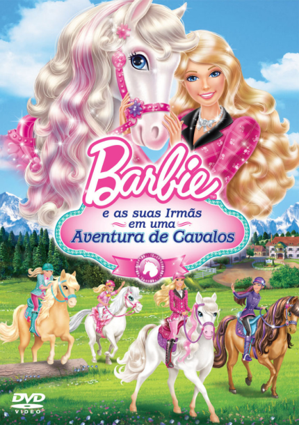 Barbie e as suas irmãs partem numa aventura nos majestosos Alpes suíços, onde vão passar o verão numa divertida e reconhecida academia equestre! A Barbie mal pode esperar para encontrar um novo cavalo para levar para Malibu. A Stacie quer provar que é uma cavaleira incrível. Tudo o que a Chelsea quer é montar os cavalos grandes, e a Skipper… bem, digamos que está mais interessada em escrever sobre a vida ao ar livre do que vivê-la. As férias das irmãs não começam muito bem, mas quando a Barbie descobre um misterioso cavalo no bosque, a sua visita torna-se verdadeiramente mágica.
Barbie - A Sereia das Pérolas (2014)
 Desde pequena, Lumina tem o poder mágico de fazer as pérolas dançarem e brilharem. Ela e a sua melhor amiga Tuca, um cavalo-marinho cor-de-rosa, embarcam numa aventura ao fantástico reino das sereias. Lá, ela ajuda as suas amigas com os seus poderes incríveis, criando penteados lindos para o Baile Real. Lumina descobre então que as suas pérolas mágicas são a chave para desvendar o seu verdadeiro destino e salvar para sempre o reino das sereias.
Desde pequena, Lumina tem o poder mágico de fazer as pérolas dançarem e brilharem. Ela e a sua melhor amiga Tuca, um cavalo-marinho cor-de-rosa, embarcam numa aventura ao fantástico reino das sereias. Lá, ela ajuda as suas amigas com os seus poderes incríveis, criando penteados lindos para o Baile Real. Lumina descobre então que as suas pérolas mágicas são a chave para desvendar o seu verdadeiro destino e salvar para sempre o reino das sereias.
Barbie e o Portal Secreto (2014)
 Alexa é uma linda princesa que descobre um Portal Secreto que a leva a uma terra encantada cheia de surpresas e seres mágicos! Ao cruzar o Portal, Alexa conhece a sereia Romy e a fada Nori, e elas contam-lhe que uma princesa mimada chamada Malúcia está capturando toda a magia do reino só para ela. Para sua surpresa, nesse mundo Alexa ganha poderes mágicos, e suas novas amigas têm certeza de que somente ela pode recuperar a magia do reino. Descubra o que acontece quando a princesa Alexa deixa seus medos de lado e defende suas amigas de Malúcia, e percebe que o poder da amizade é muito mais precioso que qualquer magia.
Alexa é uma linda princesa que descobre um Portal Secreto que a leva a uma terra encantada cheia de surpresas e seres mágicos! Ao cruzar o Portal, Alexa conhece a sereia Romy e a fada Nori, e elas contam-lhe que uma princesa mimada chamada Malúcia está capturando toda a magia do reino só para ela. Para sua surpresa, nesse mundo Alexa ganha poderes mágicos, e suas novas amigas têm certeza de que somente ela pode recuperar a magia do reino. Descubra o que acontece quando a princesa Alexa deixa seus medos de lado e defende suas amigas de Malúcia, e percebe que o poder da amizade é muito mais precioso que qualquer magia.
Barbie - Super Princesa (2015)
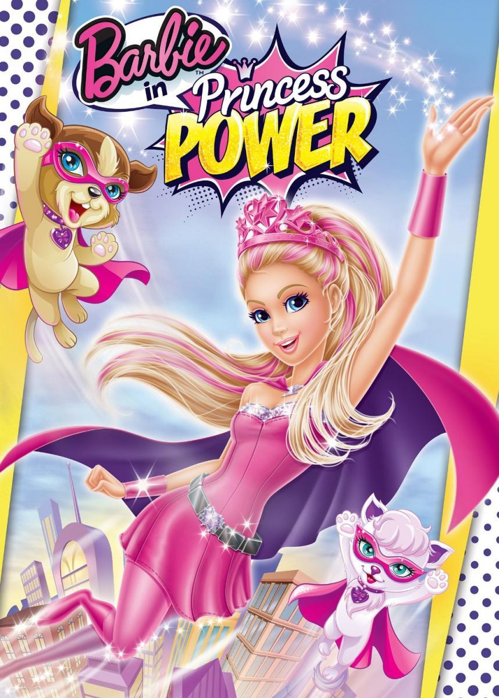 Kara é uma princesa com uma vida quotidiana, que depois de ser beijada por uma borboleta mágica, descobre que tem poderes incríveis. É então que secretamente se transforma numa Super Princesa que irá combater o crime por todo o reino.
Barbie - Rainhas do Rock (2015)
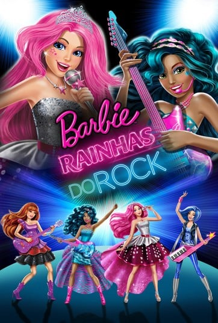 Neste musical cheio de ritmo, Barbie é Courtney, uma princesa cujo mundo é virado do avesso quando ela troca de lugares com Erika, uma famosa rockstar.
Barbie e Suas Irmãs em Uma Aventura de Cachorrinhos (2015)
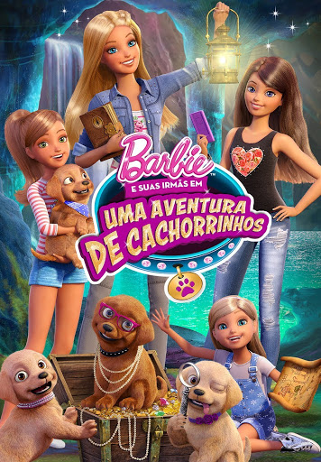 Barbie e as irmãs, Skipper, Stacie e Chelsea, e os seus adoráveis cachorrinhos vão deparar-se com muitas aventuras e mistérios, enquanto tentam chegar à sua terra natal, Willows.
Barbie e as Agentes Secretas (2016)
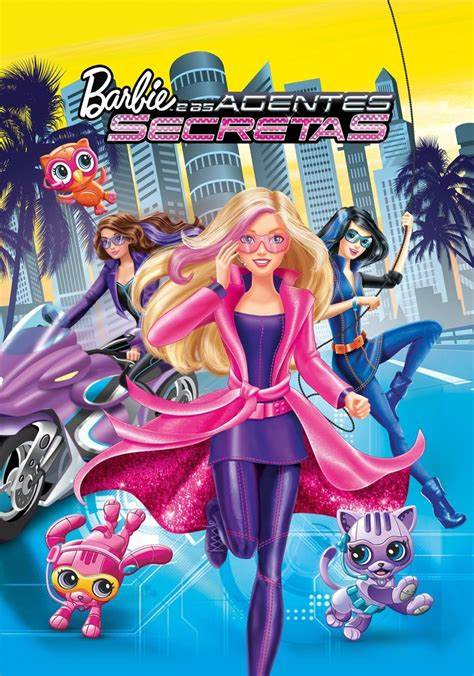 Quando as incríveis habilidades na Ginástica chamam a atenção de uma agência de espiões ultrassecreta, Barbie, Teresa e Renee são convocadas para investigar um roubo de joias e perseguir a ladra responsável.
Barbie: Aventura nas Estrelas (2016)
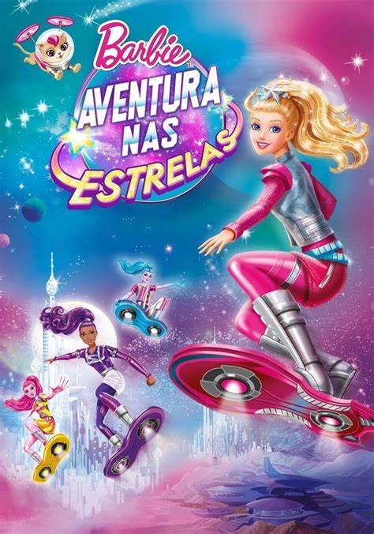 Barbie leva uma vida cheia de aventura e diversão voando de hoverboard junto com seu bichinho Pipoca em um maravilhoso planeta distante. Um dia tudo muda quando o brilho da sua galáxia enfraquece e as estrelas começam a parar sua dança pelo céu. Mesmo com receio de deixar seu lar, Barbie viaja para o Planeta Capital e se une a uma equipe incrível em uma missão para salvar as estrelas. Lá, ela encontra a campeã galáctica de hoverboard, Sal-lee, e um grupo de amigos cheios de talento. Barbie logo descobre que escutando seu coração e com a ajuda de seus amigos, ela pode se tornar a líder que a galáxia inteira está esperando.
Barbie e Suas Irmãs em Busca dos Cachorrinhos (2016)
 Barbie e suas irmãs embarcam em uma viagem divertidíssima para uma ilha paradisíaca. Mas, durante uma competição de dança os seus cachorrinhos desaparecem!
Barbie e suas irmãs embarcam em uma viagem divertidíssima para uma ilha paradisíaca. Mas, durante uma competição de dança os seus cachorrinhos desaparecem!
Barbie em Um Mundo de Vídeo Game (2017)
 Prepara-te para jogar! Quando a Barbie entra por magia no seu jogo favorito ela fica muito contente quando percebe que se transformou numa personagem patinadora. No jogo ela conhece Cutie, uma nova e adorável amiga em forma de nuvem, e Bella, a Princesa Patinadora. Juntas elas vão descobrir um emoji malvado que está a tentar apoderar-se do jogo. À medida que elas vão passando de nível, a Barbie vai ter que confiar nas suas habilidades e criatividade para salvar a sua equipa e vencer o jogo!
Prepara-te para jogar! Quando a Barbie entra por magia no seu jogo favorito ela fica muito contente quando percebe que se transformou numa personagem patinadora. No jogo ela conhece Cutie, uma nova e adorável amiga em forma de nuvem, e Bella, a Princesa Patinadora. Juntas elas vão descobrir um emoji malvado que está a tentar apoderar-se do jogo. À medida que elas vão passando de nível, a Barbie vai ter que confiar nas suas habilidades e criatividade para salvar a sua equipa e vencer o jogo!
Barbie e os Golfinhos Mágicos (2017)
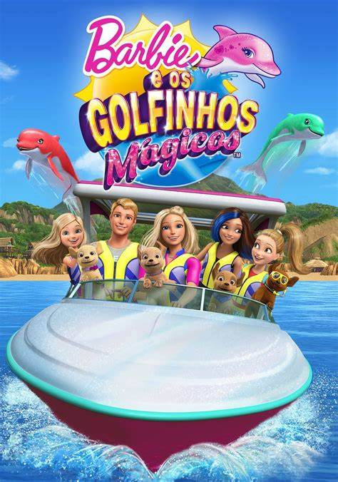 Enquanto Ken faz estágio em biologia marítima num resort sob a supervisão da professora Marlo, Barbie e suas irmãs decidem visitá-lo. A alegria e a diversão subaquática tomam conta das garotas até que elas descobrem que os golfinhos das pedras preciosas realmente existem e estão em perigo
Barbie (2023)
 Enquanto Ken faz estágio em biologia marítima num resort sob a supervisão da professora Marlo, Barbie e suas irmãs decidem visitá-lo. A alegria e a diversão subaquática tomam conta das garotas até que elas descobrem que os golfinhos das pedras preciosas realmente existem e estão em perigo
Enquanto Ken faz estágio em biologia marítima num resort sob a supervisão da professora Marlo, Barbie e suas irmãs decidem visitá-lo. A alegria e a diversão subaquática tomam conta das garotas até que elas descobrem que os golfinhos das pedras preciosas realmente existem e estão em perigo